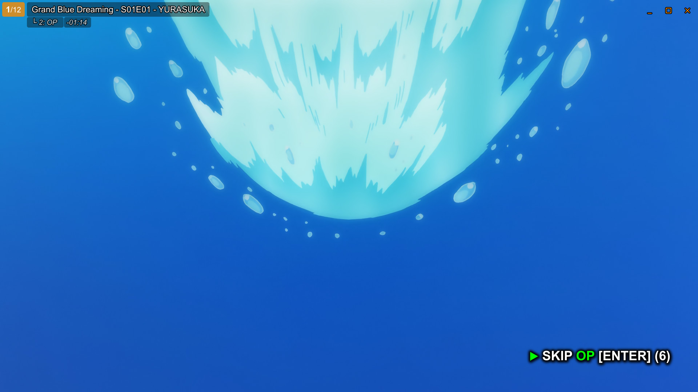
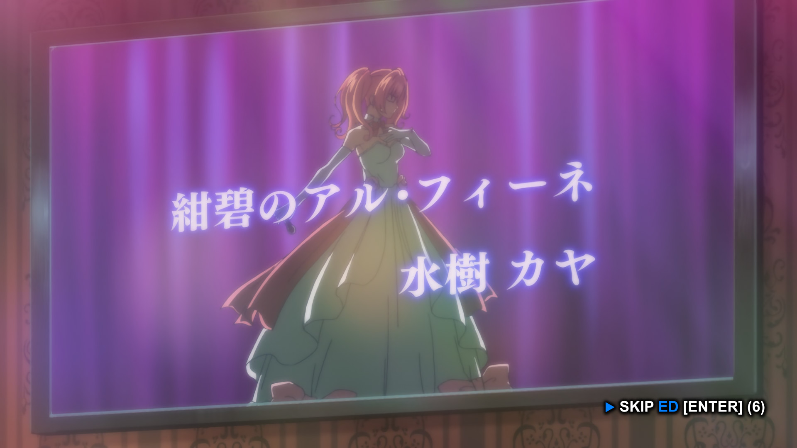
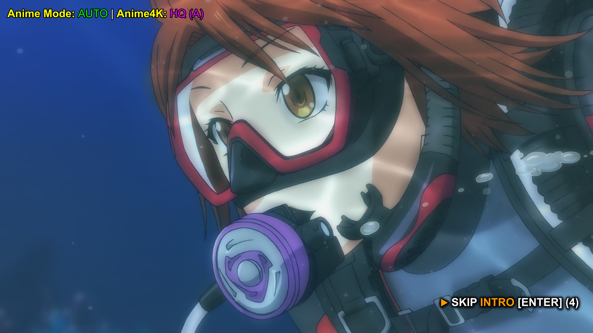
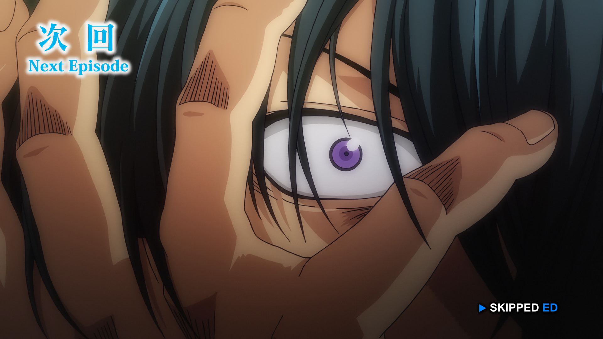
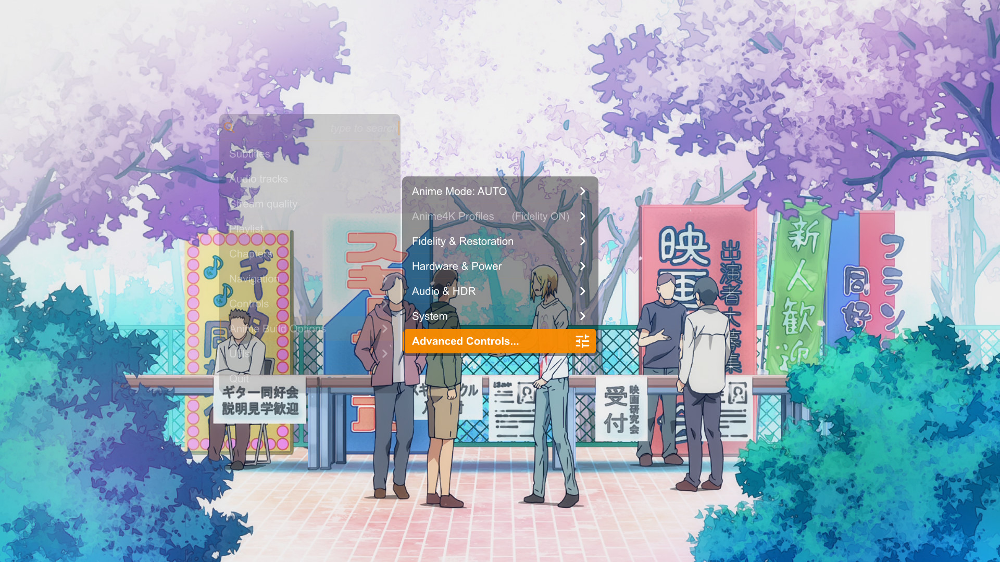
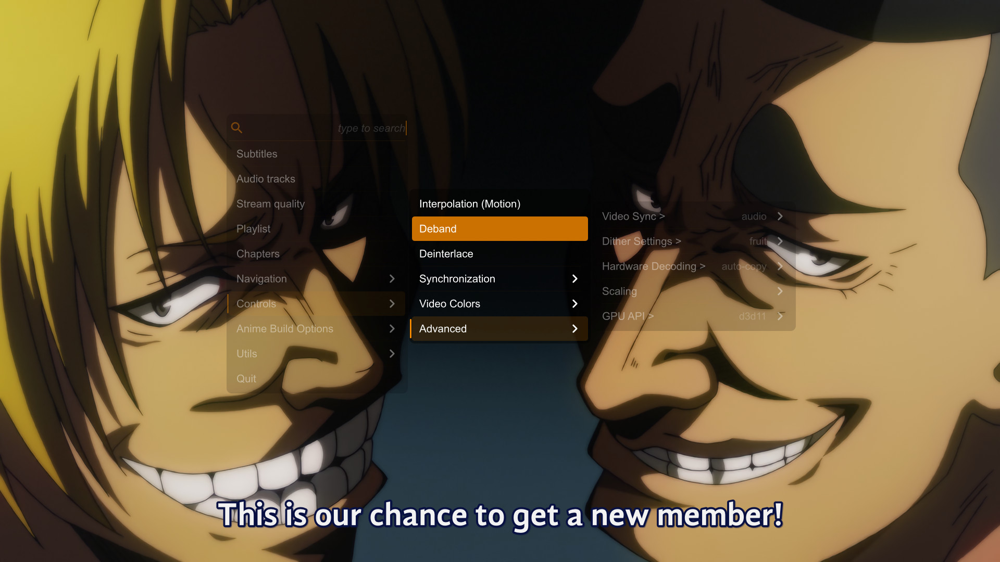
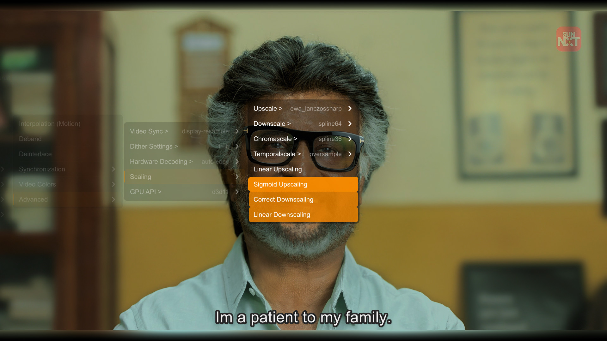
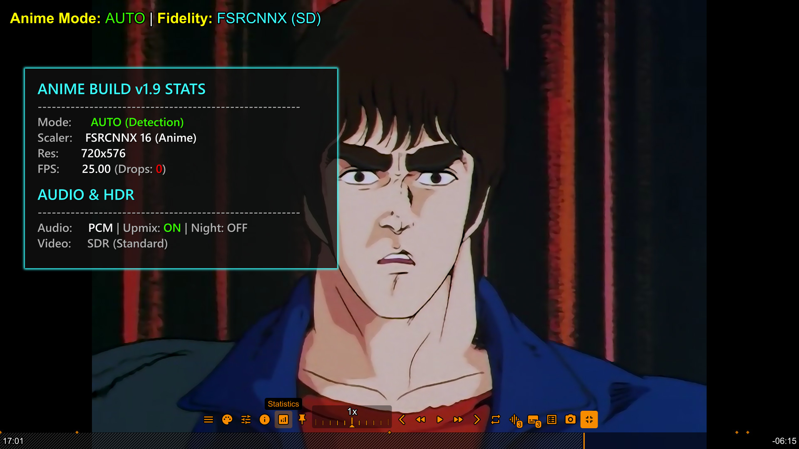

This build is the perfect "Engine" for high-quality streaming. We recommend these apps for the best 4K HDR and Anime Tracking experience.
Best For: Movies, TV & 4K HDR
The ultimate hub. Supports real-time torrent streaming, Dolby Vision, and 4K HDR.
*Enable "Play in External Player" in settings.
Best For: Anime Only (Tracking)
Dedicated Anime clients that sync with Anilist/MAL automatically while you watch.
*Set Custom Player Path to your mpv.exe.

Opening (OP) • Green Indicator

Ending (ED) • Blue Indicator

Generic Intro • Orange Theme

Visual Feedback • Instant Confirmation

Anime Build Options • Quick Access Hub

Advanced Controls • Deep Customization

Expanded Scalers • Select Spline64, Lanczos, or EWA Lanczos instantly.
Press CTRL+i or Press New 'Statistics' Button to view the new Statistics overlay. It now shows exactly which Fidelity mode is active, your Audio Upmix status, and Drop frames.

Integrated Ani4Kv2 and AniSD neural network models into the Anime4K profiles for cutting-edge line-art reconstruction and artifact removal.
A robust new HDR controller: Choose between Auto, HDR Display (Passthrough), or SDR Display (Tone-Map) to bypass OS detection errors.
A dedicated Subtitle Styling menu within the UOSC Controls allows you to customize fonts, colors, and borders instantly without touching config files.
The core Windows engine now explicitly prioritizes NVIDIA's highly efficient nvdec decoder for ultra-smooth rendering on RTX/GTX hardware.
Seamlessly adjust audio levels and trigger the modern glass UOSC volume UI by simply scrolling your mouse wheel anywhere on the video.
Anime4K is no longer a single global toggle. Your Quality and Mode preferences are now remembered independently for each resolution tier (SD up to 8K).
A dedicated, hardware-safe hqdn3d control suite in the menu to instantly clean up heavy film grain or low-bitrate compression artifacts.
Intelligently handles missing metadata by prioritizing "Dialogue" subtitle tracks and gracefully falling back to muxer defaults if needed.
Zero-overhead profile for music. Automatically disables heavy video shaders and features built-in support for visualizers and album art.
A new immersive viewing mode that fills black bars with glowing ambient colors.
Seamlessly pop the video out into a Picture-in-Picture floating window for multitasking.
Instantly fine-tune your audio frequencies directly from the newly overhauled UI without leaving the player.
Hardware-decoded 8K detection that automatically bypasses heavy upscalers to prevent GPU crashes and ensure smooth playback.
Faster state transitions, lower startup overhead, and a completely reorganized UOSC Glass UI with new intuitive submenus.
A completely reworked UOSC theme with translucent menus, neon accents, and a centralized control hub.
Reworked detection logic sends raw metadata to your display when Windows HDR is active.
Upscale 1080p anime to 4K with restoration, or clean up old 480p DVDs.
Don't like the "oil painting" look? Use FSRCNNX for anime. Pure scaling, no art alteration.
Live Action uses NNEDI3 and Adaptive Sharpen to mimic Sony/Samsung TV processing.
"Up Next" and "Skip Intro" overlays are clickable. Hover to activate, click to skip instantly.
Detects Anime Mode on Stremio & Web Links by scanning internal audio tracks for Japanese language.
Scaling is no longer fixed. The build detects your monitor and applies Adaptive Scaling (1.0x - 4.0x).
Detects Laptop Battery. Actively LOCKS heavy shaders to prevent drain and auto-switches to ECO Mode.
Swap variants instantly. Separate memories for SD (Clean) & HD (Sharp) Live-Action content.
Includes Spline64 and Lanczos to match SVP 4 Pro quality when downscaling 4K movies.
The build remembers everything: Upscaler choice, Shader state, and HDR settings across restarts.
Dynamic Range Compression for audio. Lowers explosions, boosts dialogue. Perfect for night watching.
Controls for Video Sync/Temporal Scalers, plus a smart Stats overlay that calculates true target resolution.
This MPV Custom Build is a pre-packaged solution that replaces manual configuration.
It combines a highly tuned mpv.conf with the best open-source shaders available.